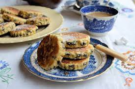

Welsh cakes

Description
This is an easy recipe for Welsh cakes.
Ingredients
- 110g wholemeal flour
- 110g self-raising flour
- 1 tsp baking powder
- 75g sugar
- 0.5 tsp nutmeg or mixed spice
- 110g butter
- 75 sultanas
- 1 large egg
- a little milk if necessary
Steps
- Rub the butter into the dry ingredients.
- Add the fruit, egg and milk.
- Roll out to 0.5cm thick. Cut round shapes with cookie cutter.
- Fry the cakes at 3 min per side.